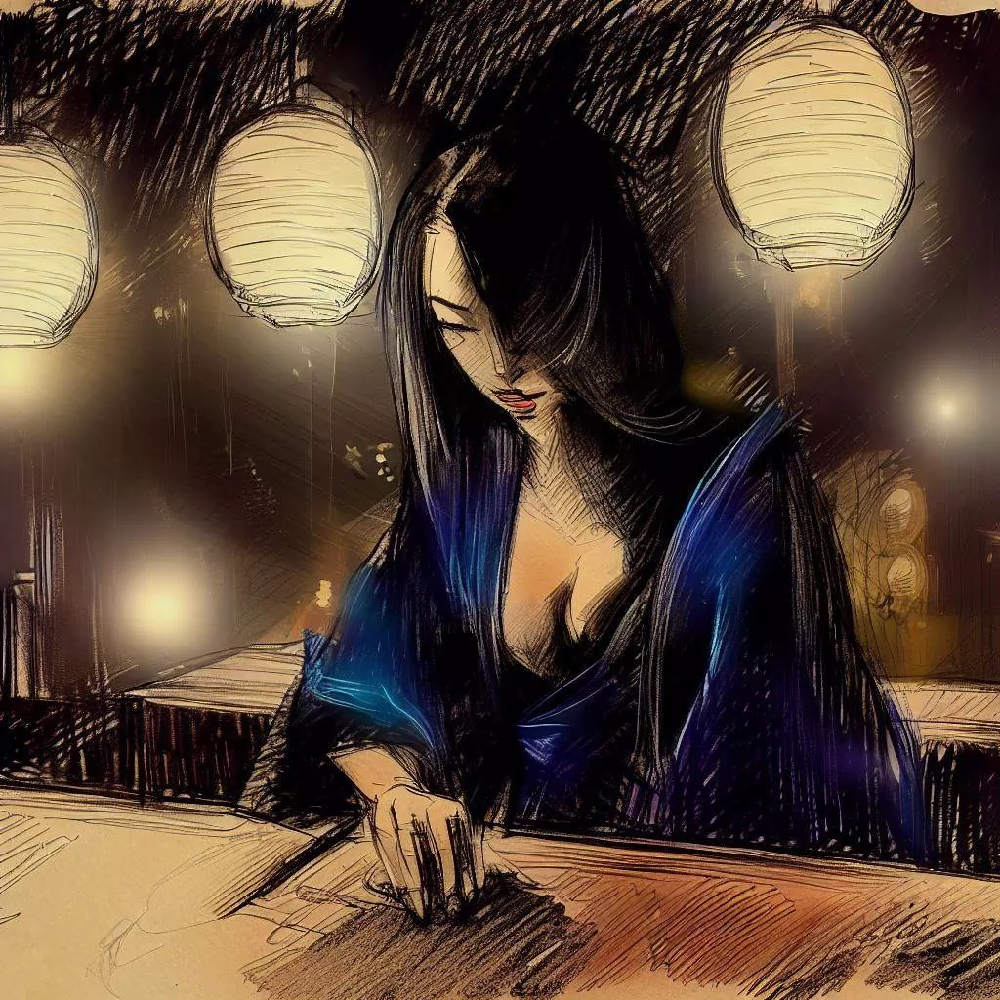

Komayo: Gema Mistis saka Game Ogi
Aku pengen ngucapake trimo marang Komayo. Dheweke ngajari aku permainan strategi sing menarik banget. Aku bakal ceritakake pertemuan kita. Iki sawijining kenangan sing kula banget senengi lan kula pengen ngabari kene.
Dalan Kanggo Nalika Sing Ora Dikenal
Dinane wis rampung lan aku ninggalake pekerjaanku. Aku ana ing Osaka lan nyedhot udara peteng sing segar. Kotane tenang lan aku berasa tentrem.

Aku mlaku ing dalan-dalan. Gedhung-gedhunge gedhe lan cerah. Dheweke ayu banget ing wengi.
Aku nglawani sekitar sing rame karo warung makan lan wong-wong sing ngobrol. Senadyan aku capek, aku pengen nggawe sesuatu sing menarik. Banjur, aku ngenali bar sing diarani Regency Bar. Iki sawijining tempat diendhi wong-wong main shogi.
Aku berasa kepengen njero bar. Aku pengen ngadepi tantangan lan ngrelaksasi sedhikit.
Bar Permainan
Aku njero Regency Bar. Iki sawijining tempat sing tenang karo cahaya sing alus. Wong-wong niki lagi main shogi.
Aku pesen segelas sake. Aku ndelok sekitar. Aku mbau kayu lan dupa. Aku ndenger gerak-gerik potongan shogi lan wong-wong ngobrol alus.
Ana lanang lan wadon lan umure macem-macem main shogi. Dheweke konsentrasi karo permainane dheweke. Dheweke ndeleng seneng, sedih utawa was-was karo saben gerak.
Aku ndeleng wanita dhewekan ing meja. Dheweke ayu lan tenang. Aku penasaran karo dheweke. Aku nglakoni dheweke, aku mesem lan takon dheweke yen dheweke pengen main shogi karo aku.

Permainan Sing Beda
Dheweke mesem nalika aku takon main.
Dheweke ngeluarkan papan permainan. Iku disembunyikan ing bawah kain. Aku kaget. Papan iku luwih cilik tinimbang biasane. Iku duwe kotak lan potongan luwih sethithik. Dibandingake duwe 9x9 kotak kaya shogi normal, iku duwe 8x8 kotak. Uga mung 18 potongan kanggo saben pemain. Sadurunge aku bisa takon pitakonan, dheweke wiwit nerangake. Dheweke ngomong iki permainan sing diarani ogi.

Dheweke ngomong bab potongan khusus. Iku potongan putri. Dheweke ngomong menawa potongan iki nggawe permainan luwih dinamis. Nalika dheweke ndeleng kagetku, dheweke mesem. Banjur, dheweke wiwit naruh potongan ing papan.
Nalika dheweke naruh potongan, aku ndeleng sesuatu sing beda. Ana menara ing pojok papan. Dheweke nerangake menara iki ngganti tombak saka shogi normal.
Nalika kabeh potongan wis ana ing papan, aku bener-bener semangat. Aku pengen banget main permainan anyar iki. Lan aku pengen ngerti luwih akeh bab wanita misterius iki.
Ujian Permainan
Jam ngebut. Sunyane mung dipecah dening suara potongan sing mlaku ing papan. Potongan-potongan mlaku karo tekad. Putri ngarahake permainan. Sunya permainan ngisi ruangan. Iki bener-bener intens.
Wanita iku main apik banget. Nalika dheweke nangkep salah siji saka potonganku, dheweke bisa mbalikake iku ing papan kanggo dimainake minangka salah siji saka potongan dheweke dheweke. Saben gerak sing dheweke gawe iku pelajaran kanggo aku. Dheweke nyekel perhatian akeh marang saben potongan.
Aku terus main. Aku mlaku potonganku karo energi akeh. Aku nglindhungi raja. Tapi karo saben gerak, aku berasa luwih capek. Mataku luwih berat.
Pungkase, aku ora bisa tetep melek maneh. Aku kelewatan capek. Kabeh sing luwih item. Sing pungkase aku deleng iku senyuman wanita. Dheweke bener-bener seneng.

Penyadaran Sing Mengejutake
Aku turu, ilang ing gelap. Banjur, sethitik-se-thitike, aku bangun. Iku esuk. Aku mbukak mataku. Bare sing luwih ora diganti.
Papan permainan isih ana, kaya dina sadurunge. Tapi wanita ora ana. Dheweke wis bali. Ora ana dheweke ngilangi sawijining kosong. Bare iku bener-bener sunyi.
Aku ndeleng sawijining potongan kertas ing pinggir papan permainan. Aku nang kertas iku. Ana tembung ing iku: "Trimakasih". Lan jeneng: "Komayo". Jeneng iki kenangan pungkase saka wanita. Aku wis nglalui wengi sing apik banget karo dheweke, main ogi ing Regency Bar.